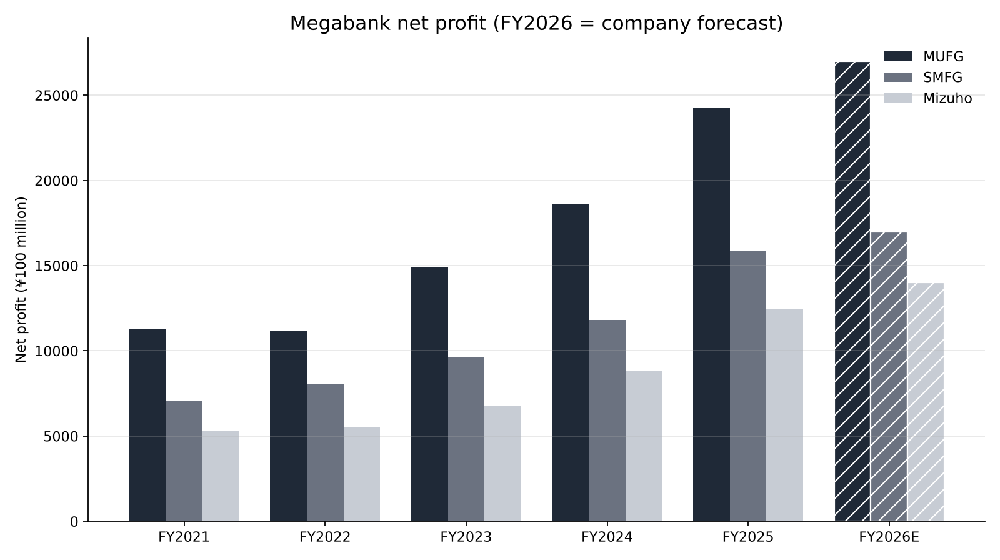
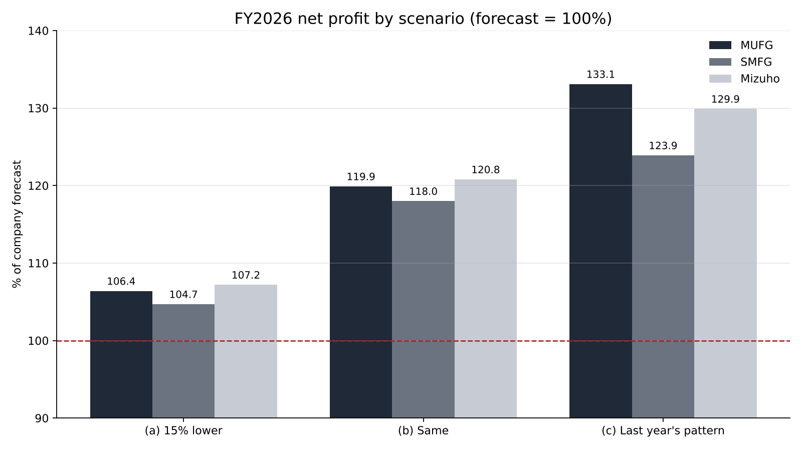

How Far Will Japan's Three Megabanks' Full-Year Profit Forecasts Firm Up at the November 13 Interim Results?
Mitsubishi UFJ Financial Group (MUFG), Sumitomo Mitsui Financial Group (SMFG) and Mizuho Financial Group will report their interim results for fiscal 2026 on November 13[4]. Their combined April–June net profit was ¥1.7336 trillion (about $11.0 billion), up more than 40% year on year[2][3].
Meanwhile, after the Nikkei's plunge on November 6, market-implied odds of a Bank of Japan rate hike in December were reported to have fallen to the low 50% range[10]. The TSE banks index fell 7.02% last week alone[11].
The question of this article: judging by how past results have progressed, how likely are the three banks to reach their fiscal 2026 net profit forecasts, and what should we check at the interim results to settle the answer?
- The three banks' fiscal 2026 net profit forecasts (MUFG ¥2.7 trillion, SMFG ¥1.7 trillion, Mizuho ¥1.4 trillion) imply only 7–12% growth over fiscal 2025, and April–June progress was 29.5–30.2%.
- The forecasts are still met even if each quarter from July–September falls about 20% below April–June; in the weakest scenario, all three beat forecasts by 5–7%.
- At the interim results, check three things: progress above 50%, net interest income holding at the April–June level, and no jump in credit costs.

Question and background
Net profit at all three banks has grown sharply over five years. From fiscal 2021 (year to March 2022) to fiscal 2025 (year to March 2026), MUFG rose from about ¥1.13 trillion to ¥2.4272 trillion, SMFG from about ¥706.6 billion to ¥1.583 trillion, and Mizuho from about ¥530.5 billion to ¥1.2486 trillion[5][6][7]. Annualized over four years, that is growth of 21–24% for each bank.
The core driver is net interest income: interest received on loans and securities minus interest paid on deposits and other funding. The BOJ ended negative rates in March 2024 and, through subsequent hikes, raised the policy rate to about 1.25% in September 2026[4].
Another term used here is the progress rate: the share of the full-year forecast (the company's target) that net profit has reached by a given point. The interim results show this rate at the halfway mark.
The fiscal 2026 forecasts are ¥2.7 trillion for MUFG, ¥1.7 trillion for SMFG and ¥1.4 trillion for Mizuho[3]. Mizuho raised its forecast from ¥1.3 trillion at its April–June results[3].
Data and method
I use net profit attributable to owners of the parent from each bank's earnings releases and presentation materials[1][5][6][7]. Figures for earlier years come from an EDINET-based compilation of annual securities reports[7]. For lending rates, I use the BOJ's average contract interest rates on loans[8].
The method has three steps. First, I trace how fiscal 2025 progressed: April–June, interim and full-year net profit, and how far actual results beat the initial forecast.
Second, I apply fiscal 2025's pattern to fiscal 2026's April–June net profit. Fiscal 2025's April–June figures were backed out from the fiscal 2026 figures and year-on-year growth rates: about ¥546.2 billion for MUFG, ¥376.9 billion for SMFG and ¥290.5 billion for Mizuho.
Third, I set three paths for earnings from July–September onward and estimate fiscal 2026 full-year net profit. Bank quarterly earnings are seasonal: in January–March, the last quarter of the fiscal year, expenses and provisions tend to be booked together and profit growth often slows. Scenario (a) tests this by setting later quarters lower. I also back out what percentage of the April–June level each later quarter must reach for the forecast to be met exactly.

Results
First, fiscal 2025. All three banks finished well above their initial forecasts.
| Bank | Initial forecast | Interim net profit | Interim progress | Full-year actual | vs. initial |
|---|---|---|---|---|---|
| MUFG | ¥2.0 trillion | ¥1.2929 trillion | 64.6% | ¥2.4272 trillion | 121.4% |
| SMFG | ¥1.3 trillion | ¥933.5 billion | 71.8% | ¥1.583 trillion | 121.8% |
| Mizuho | ¥1.02 trillion | ¥689.9 billion | 67.6% | ¥1.2486 trillion | 122.4% |
At the interim stage, MUFG raised its forecast to ¥2.1 trillion, SMFG to ¥1.5 trillion and Mizuho to ¥1.13 trillion[5][6][9]. All three then beat even the raised figures. In the year when interim progress reached 65–72%, full-year results exceeded initial forecasts by more than 20%.

Next, fiscal 2026 April–June progress. MUFG earned ¥809.4 billion, 30.0% of its forecast; SMFG ¥501.3 billion, 29.5%; Mizuho ¥422.9 billion, 30.2%[2][3]. Simply multiplying by four puts all three nearly 20% above forecast. Combined, the ¥1.7336 trillion for April–June is 29.9% of the combined ¥5.8 trillion forecast. Against fiscal 2025's combined actual of ¥5.2588 trillion, the combined forecast is only 10.3% higher.
I also backed out the break-even. The forecast is still met if each of the three remaining quarters falls to 77.9% of April–June at MUFG, 79.7% at SMFG and 77.0% at Mizuho. Put differently, the forecasts are reached even if remaining quarterly profit drops about 20% from April–June.
Sensitivity analysis
I estimated full-year net profit under three paths for July–September onward: (a) each later quarter 15% below April–June, (b) the same as April–June, and (c) the same back-half acceleration as fiscal 2025. For (c), the multiplier is fiscal 2025 full-year net profit divided by that year's April–June figure (MUFG 4.44x, SMFG 4.20x, Mizuho 4.30x).
| Bank | (a) 15% lower | (b) Same | (c) Last year's pattern |
|---|---|---|---|
| MUFG | ¥2.8734 trillion (106.4% of forecast) | ¥3.2376 trillion (119.9%) | ¥3.5937 trillion (133.1%) |
| SMFG | ¥1.7796 trillion (104.7%) | ¥2.0052 trillion (118.0%) | ¥2.1055 trillion (123.9%) |
| Mizuho | ¥1.5013 trillion (107.2%) | ¥1.6916 trillion (120.8%) | ¥1.8185 trillion (129.9%) |
None of the three paths falls below the forecast. Even in the weakest case (a), all three exceed their forecasts by 5–7%.

At the interim stage, if the bank earns at the April–June pace, MUFG's interim net profit would be about ¥1.6188 trillion, a 60.0% progress rate. That is lower than fiscal 2025's interim progress of 64.6–71.8% because the fiscal 2026 forecast itself is set close to the previous year's actual.
Discussion
The estimates suggest the forecasts have headroom. Fiscal 2026 forecasts imply profit growth over fiscal 2025 actuals of only 11.2% at MUFG, 7.4% at SMFG and 12.1% at Mizuho. Against four-year annualized growth of 21–24%, they look conservatively set.
There are counterarguments. First, April–June profit may include gains on equity sales or one-off items. November's stock plunge could change the valuation of securities and sale plans from July–September onward.
Second, the effect of rate hikes depends on how fast lending rates rise. In BOJ data, the average contract rate on outstanding loans at domestic banks rose 0.72 percentage points from March 2024 to August 2026[8]. On new loans, it rose from 0.683% to 1.782% over the same period[8]. If a December hike is skipped, the boost in the second half of fiscal 2026 would be smaller.
Third, credit costs could rise. When the economy cools, borrowers fall behind and banks add provisions. Overseas lending carries risks that are hard to read, from US tariffs to the Middle East.
On data limits: SMFG's April–June growth was reported as roughly 33%, so the backed-out prior-year figure has a range[3]. Some earlier-year net profit figures are rounded values from a compilation site[7]. The test is clear: whether interim net profit on November 13 exceeds 50% of the forecast, and whether the banks raise their forecasts.
For bank shareholders, the dividend outlook also matters. Fiscal 2026 annual dividend forecasts are ¥96 per share at MUFG and ¥90 at SMFG after its 1-for-2 split[4]. Many banks set dividends as a fixed ratio of net profit, so beating the forecast could bring higher dividends or buybacks. Missing it would narrow any dividend increase.
Conclusion
The answer: judging by past progress, the fiscal 2026 forecasts are likely to be reached. Even if quarters from July–September onward fall about 20% below April–June, all three reach their forecasts. At the interim results, three things deserve checking: whether interim progress exceeds 50%, whether July–September net interest income holds at the April–June level, and whether credit costs have jumped.
How I see it
I live in Japan and hold four Japanese bank stocks: 7,500 shares of MUFG, 13,500 of Resona, and 26,000 each of Sumitomo Mitsui Trust and SMFG. Japanese stocks are 48.14% of my total assets.
Even when share prices fall, dividends don't change. With these four banks, I watch two things, dividends and net profit, and on the 13th I intend only to check whether those two are in line with forecasts. The BOJ isn't cutting rates, so even if December hike odds fall, I won't change how I hold them. I have no plan to buy or sell on results day.
Sources
- Mitsubishi UFJ Financial Group, "Consolidated Summary Report for the Six Months Ended September 30, 2025", 2025-11-14, https://www.mufg.jp/dam/ir/fs/2025/pdf/summary2509_ja.pdf
- Bloomberg, "MUFG April–June net profit up 48% to ¥809.4 billion", 2026-08-03, https://www.bloomberg.com/jp/news/articles/2026-08-03/TJ6ETEKK3NY800
- ONE CAREER, "Megabank results compared", 2026, https://plus.onecareer.jp/articles/934
- media-ir, "Focus of megabank results", 2026-11-08, https://www.media-ir.com/news/?p=187525
- Mitsubishi UFJ Financial Group, "FY2025 Interim Financial Highlights", 2025-11-14, https://www.mufg.jp/dam/ir/fs/2025/pdf/highlights2509_ja.pdf
- Sumitomo Mitsui Financial Group, "FY2025 Interim Results Materials", 2025-11, https://www.smfg.co.jp/investor/financial/disclosure/fy2025_inter_pdf/fy2025_inter_02.pdf
- EDINET DB, "Earnings history of Mizuho FG, SMFG and MUFG" (compiled from annual securities reports), accessed 2026-11-09, https://edinetdb.jp/company/E03615/earnings/FY2025
- Bank of Japan, "Average Contract Interest Rates on Loans and Discounts", 2026, https://www.boj.or.jp/statistics/dl/loan/yaku/index.htm
- Mizuho Financial Group, "Consolidated Summary Report for the Six Months Ended September 30, 2025" (via Monex), 2025-11-14, https://scouter.monex.co.jp/news/detail/8411_20251114_act_20251114_153045_4
- Nikkei, "Stock plunge clouds BOJ December hike; market odds in low 50% range", 2026-11-06, https://www.nikkei.com/article/DGXZQOFL060BJTW6A101C2000000/
- Magnikki, "Review of the week of Nov 2–6", 2026-11-08, https://magnikki.com/market-review-2026w45/
Photos: Kate Branch, Mohamed Jamil Latrach (Unsplash). Charts by YUKI CAPITAL
I record my daily numbers and decisions on X.